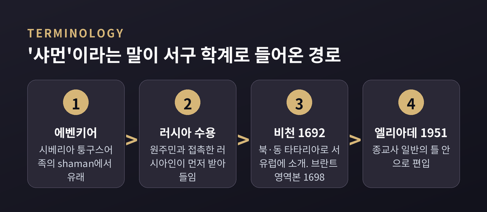
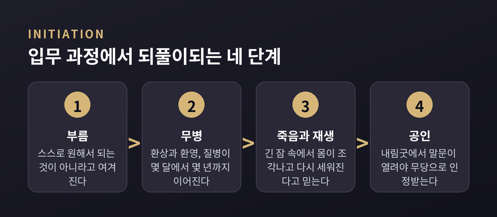
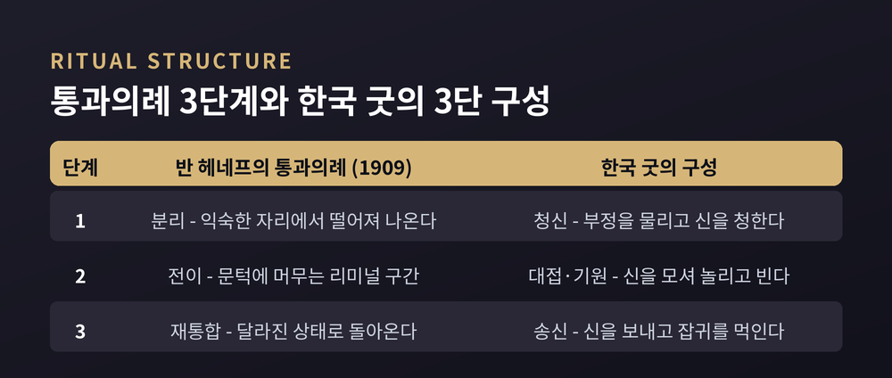
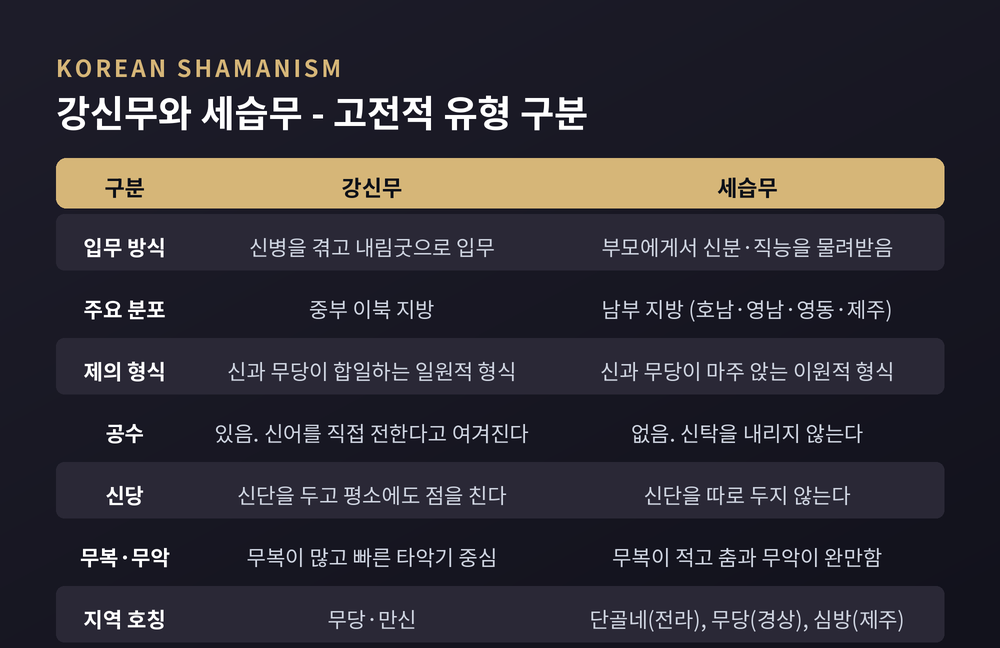

이번 글에서는 샤머니즘의 구조를 종교학의 눈으로 정리해 보겠습니다. 시베리아, 몽골, 한국, 아메리카처럼 서로 멀리 떨어진 곳에서 왜 닮은 형태의 종교 전문가가 나타났는지가 오랜 질문이었습니다.
먼저 결론부터 적습니다. 학계는 아직 하나의 답에 이르지 못했습니다. 공통된 인간 조건이 비슷한 형태를 낳았다는 설명과, '샤머니즘'이라는 범주 자체가 서구 학계의 구성물이라는 반론이 함께 서 있습니다.
어느 신앙이 옳은지를 가리려는 글이 아닙니다. 개념이 어떻게 만들어졌고, 무엇이 관찰되었고, 어디서 의견이 갈리는지를 차례로 짚어보려 합니다.
이 단어는 서구에서 만들어진 말이 아닙니다.
'샤먼(shaman)'은 시베리아 에벤키어의 šamán에서 온 것으로 봅니다. 에벤키어는 퉁구스어족에 속하며, 그중에서도 심(Sym) 지역 방언이 가장 유력한 후보로 꼽힙니다.
다만 그 이상은 확실하지 않습니다. 퉁구스어 어근 ša-, 곧 '알다'와 연결하는 설명이 있으나 언어학적으로 이의가 제기되었습니다. 미르체아 엘리아데는 산스크리트어 śramaṇa, 곧 떠도는 수행자를 가리키는 말이 궁극적 기원일 수 있다고 언급했습니다. 어원은 지금도 열려 있는 문제입니다.
이 말을 먼저 받아들인 쪽은 시베리아 원주민과 접촉한 러시아인들이었습니다. 유배당한 러시아 정교회 사제 아바쿰의 회상록에 이 단어가 나타납니다.
서유럽에 들어온 통로는 비교적 또렷합니다. 네덜란드 여행가 니콜라스 비천이 퉁구스계와 사모예드계 주민들 사이에 머문 기록을 1692년 『북·동 타타리아』로 펴냈고, 이 책을 통해 '샤먼'이 서유럽에 소개되었습니다. 뤼베크 상인 아담 브란트가 1698년 러시아 사절단의 중국행 기록을 냈고, 같은 해 나온 영역본이 이 낱말을 영어권에 처음 옮겼습니다.
여기서 눈여겨볼 대목이 있습니다. 비천이 남긴 삽화는 알려진 가장 이른 시베리아 샤먼 도상입니다. 그런데 1705년 제2판에서 그는 이 그림에 '악마의 사제'라는 이름을 붙였고, 발에 갈고리 발톱을 그려 넣어 악마적 성격을 강조했습니다.
개념이 수입되던 첫 장면부터, 관찰과 평가가 한데 섞여 있었던 셈입니다.

이 흩어진 자료들을 하나의 틀로 묶은 사람이 엘리아데입니다.
루마니아 출신 종교사학자였던 그는 1951년 파리에서 『샤머니즘과 엑스터시의 고대적 기술』을 냈습니다. 영역본은 1964년 프린스턴대학교출판부에서 나왔습니다. 이 책은 샤머니즘 현상을 처음으로 종교사 일반의 틀 안에 놓았다는 평가를 받습니다.
그의 정의는 짧습니다. 샤머니즘은 '엑스터시의 기술'이라는 것입니다. 혼이 몸을 떠나 다른 층위의 세계로 올라갔다가 돌아온다는 관념이 그 중심에 있습니다.
영향력이 컸던 만큼 비판도 쌓였습니다.
천상으로의 상승을 앞세우고 지하 세계로의 여행은 상대적으로 낮게 다뤘다는 지적이 있습니다. 자료를 역사적 맥락에서 떼어내 배열했다는 비판도 따릅니다. 저자의 종교적 성향이 서술에 배어 있다는 평가, 그리고 결과적으로 이 책이 학술서보다 후대 신비주의 운동의 안내서처럼 읽혔다는 지적도 나옵니다.
인류학자 앨리스 케호는 2000년 저작에서 엘리아데를 주된 비판 대상으로 삼았습니다. 핵심은 이렇습니다. '샤먼'은 그 말이 나온 시베리아 바깥의 실천가들에게 붙일 때 오용된다는 것입니다.
실제로 브리태니커의 서술을 보면 엘리아데의 정의가 자료의 절반만 담고 있다는 인상을 받습니다. 계시의 형식은 두 가지로 나뉩니다. 하나는 영이 몸에 들어오는 '빙의 트랜스'이고, 다른 하나는 혼이 몸을 떠나는 '떠도는 트랜스'입니다. 둘이 결합되는 사례도 보고됩니다. 영이 먼저 들어온 뒤 그의 혼을 이끌고 나가는 형태입니다.
엑스터시 하나로 정의하면, 빙의 쪽 자료가 설명되지 않습니다.
여러 문화의 기록에서 가장 자주 겹치는 것은 입무 과정의 이야기 구조입니다.
브리태니커의 서술을 요약하면 이렇습니다. 샤먼은 스스로 원해서 되는 것이 아니라고 여겨집니다. 초자연적 존재들이 그를 고른다는 것입니다. 대체로 사춘기 무렵 영들이 삶에 개입하기 시작하고, 선택된 이는 반복해서 실신하거나 환시를 겪습니다. 이 상태가 몇 주씩 이어지기도 합니다.
이어 꿈이나 환시에서 그를 택한 존재가 뜻을 밝힙니다. 처음에는 온갖 약속으로 회유하다가, 동의를 얻지 못하면 괴롭힌다고 이야기됩니다. 이 고통을 '샤먼 병'이라 부릅니다. 몇 달에서 몇 년까지 이어지기도 합니다.
받아들이면 긴 잠에 든다고 합니다. 사흘, 이레, 혹은 아홉 날입니다. 그 사이 영들이 몸을 조각내어 뼈를 세고, '여분의 뼈'가 있는지 확인한다고 믿습니다. 몽골인과 만주·퉁구스계는 공개적인 입무식을 치릅니다. 후보자는 하늘에 이르는 나무를 상징하는 기둥을 올라갑니다.
한국의 기록에도 같은 뼈대가 있습니다.
한국민족문화대백과사전은 이 병을 이렇게 정리합니다. 민간에서는 '신병'이라 부르고, 학계에서는 입무의 병이라는 뜻에서 '무병'이라 부릅니다. 환상과 환영, 질병 같은 정신적·육체적 증세를 통해 일어나는 종교 체험이며, 이를 신에 의한 소명 지시로 해석해 내림굿을 치른다는 것입니다.
구분은 엄격합니다. 비슷한 증세라도 무당이 되기 위한 절차로 일어난 것이 아니면 무병이라 하지 않습니다. 이미 무당이 된 사람이 무업을 그만두어 겪는 병은 '신벌'이지 무병이 아닙니다. 일반인이 굿에서 대를 잡다가 몰아경을 겪어도 신이 내렸다고 말하지 않습니다.
내림굿에서 처음으로 공수를 하는 것을 '말문 연다'고 합니다. 말문이 열려야 비로소 무당이 될 수 있다고 여깁니다.
여기서 한 가지는 분명히 해두어야 합니다. 한때 이 현상을 정신질환으로 설명하는 견해가 널리 퍼져 있었습니다. 브리태니커는 그 견해가 이후 폐기되었다고 명시합니다. 지금은 개인적 위기의 역할을 완전히 부정하지 않으면서도, 그 사회에서 샤먼이 갖는 지위, 침략이나 전염병 같은 구체적 상황, 현재 샤먼의 수와 연령 분포 같은 요인으로 설명하는 쪽입니다.

의례의 뼈대도 서로 닮았습니다.
인류학자 아르놀드 반 헤네프는 1909년 『통과의례』에서 의례를 세 단계로 정리했습니다. 분리, 전이, 재통합입니다. 다른 말로 전리미널, 리미널, 후리미널입니다. 빅터 터너는 20세기 후반에 이 가운데 '리미널리티'를 널리 알렸습니다. 한 상태를 떠났으나 아직 다음 상태에 들어가지 않은 구간이며, 이때 정체성 감각이 일시적으로 흐려진다는 설명입니다.
한국의 굿도 3단으로 짜여 있습니다.
한국민족문화대백과사전의 '굿' 항목은 굿을 "무당이 신을 청하고 환대하고 환송하는 과정으로 구성된 무속 의례"로 정의합니다. 진행 과정은 택일과 금기, 청신(請神), 대접과 기원, 송신(送神), 다시 금기의 순입니다. 앞뒤의 금기를 청신과 신성에 묶어 정리하면 청신 — 대접·기원 — 송신의 3단 구성이 남습니다.
흥미로운 것은 이 구조가 반복된다는 점입니다. 하나의 굿은 열두에서 서른 가지의 작은 굿으로 이루어지고, 이 최소 단위를 '거리'나 '석'이라 부릅니다. 그리고 각 거리 역시 청신 — 대접·기원 — 송신의 3단 구성을 그대로 갖습니다. 큰 구조 안에 같은 구조가 겹겹이 들어 있는 셈입니다.
배치에도 원리가 있습니다. 굿당을 정화하고 신을 청하는 굿이 앞에 오고, 중요한 신을 모셔 대접하고 비는 제차가 가운데를 이루며, 잡귀를 풀어 먹이는 내용이 맨 마지막에 놓입니다.
경계를 넘고, 중재하고, 돌아온다. 문화가 달라도 이 세 박자는 되풀이됩니다.

한국 무속을 다룰 때 가장 널리 쓰이는 분류가 강신무와 세습무입니다.
강신무는 신병이라는 종교 체험을 거쳐 입무한 무당입니다. 종교적 권능의 근거를 신에게 둡니다. 대체로 중부 이북 지방에 분포합니다. 신단이나 신당을 갖고 있어 굿이 아닐 때에도 신을 불러 점을 칩니다. 굿에서는 공수를 내립니다. 공수는 신어(神語)를 직접 전하는 것이지 신의 뜻을 해석하는 것이 아니라고 설명됩니다.
세습무는 부모로부터 무당의 신분이나 직능을 물려받은 무당입니다. 강신 과정이나 신 들리는 일이 없습니다. 신단을 두지 않고 굿 도중 신탁을 내리지도 않습니다. 여자 무당이 주로 춤과 노래로 신을 모시고, 남자는 무악을 연주하는 악사를 맡습니다. 지역에 따라 전라도의 '단골네', 경상도의 '무당', 제주도의 '심방'으로 불립니다.
제의의 형식도 갈립니다. 강신무의 굿은 신과 무당이 합일하는 일원적 형식입니다. 격렬한 도무로 신이 내리면 표정과 손발 하나하나가 신의 행동으로 표현됩니다. 세습무의 굿은 신과 무당이 마주 앉는 이원적 형식입니다. 그래서 무복의 비중이 작고, 춤과 무악이 완만하며, 점의 도구도 거의 쓰지 않습니다.
제주도는 중간에 있습니다. 사제권을 기반으로 하면서도 제의 중 강신 현상이 있고, 신칼·산판·요령의 '삼멩두'를 조상으로 모시며 이를 던져 신의 뜻을 알아보는 제차가 필수적입니다. 다른 지역과 달리 남녀가 똑같이 사제자 구실을 하고, 수적으로는 남성 심방이 우세합니다.
여기까지가 교과서적인 정리입니다. 그런데 이 틀 자체가 논쟁 중입니다.
우선 두 용어 모두 순수한 학술어입니다. 일반인이 쓰던 말이 아닙니다. 입무 과정을 기준으로 이 유형을 처음 나눈 사람은 일제강점기의 일본인 연구자 아키바 다카시였습니다. 1938년의 『조선무속의 연구』가 그 출발점입니다.
비판의 핵심은 이렇습니다. 강신무는 강신 체험, 세습무는 세습이라는 단순한 대비에 문제가 있다는 것입니다. 실제로 강신무에게도 세습적인 면이 매우 강하게 작용합니다. 두 개념이 무당 개인의 종교 체험에만 초점을 맞춘 좁은 틀이라는 지적도 함께 나옵니다.
흥미롭게도 이런 균열은 고전적 정리 안에도 남아 있습니다. 김태곤은 남부 지역 굿에서도 영력의 요소가 발견된다고 적었습니다. 씻김굿에서 신칼로 넋을 일구고, 영남에서 신칼로 수부치기를 하며, 제주에서 삼멩두를 던지는 것이 그 예입니다. 그는 이를 "후대로 내려오며 영력이 도태된 잔재"로 해석했습니다. 같은 자료를 두고 해석이 갈리는 지점입니다.

샤머니즘은 오랫동안 '가장 오래된 원시 종교'로 설명되어 왔습니다. 이 표현에는 19세기의 틀이 얹혀 있습니다.
에드워드 타일러와 제임스 프레이저는 인간이 원시 종교에서 더 합리적인 사고로 나아간다는 진화론적 종교관을 폈습니다. 종교란 원시인이 세계를 설명하려고 만든 장치라는 관점이었습니다.
이 틀은 여러 방향에서 무너졌습니다.
방법의 문제가 있습니다. 프레이저는 현지조사를 한 적이 없습니다. 식민지 행정관과 선교사에게 보낸 설문, 그리고 고대 문헌으로 이론을 세웠습니다. 관찰자의 편견을 한 번 거친 2차 자료였던 셈입니다.
경험적 반증도 나왔습니다. 후대의 현지조사는 주술 단계가 반드시 종교에 앞선다는 생각이 성립하지 않음을 보였습니다. 프레이저가 서술한 단계들은 보편적 역사 순서가 아니라 다양한 문화 위에 씌운 이론적 추상이었습니다.
무엇보다 이 틀은 식민주의적 세계관에 얹혀 있었습니다. 서구 과학 문명을 발전 위계의 꼭대기에 놓고, 비서구인을 인류의 이른 단계에 남은 '살아 있는 화석'으로 배치했습니다.
다만 공정하게 덧붙이겠습니다. 주술과 종교를 구분한 프레이저의 분석적 대비 자체는 여전히 개념적 가치가 있다는 평가도 있습니다. 결과를 직접 통제하려는 실천과, 더 높은 존재와 관계를 맺으려는 실천을 나누는 대비입니다.
예전엔 굿을 미신으로 밀어냈습니다. 지금은 문화유산 제도 안에서 보존합니다. 제주칠머리당영등굿은 1980년 국가무형문화재로 지정되었고, 2009년 유네스코 인류무형문화유산 대표목록에 올랐습니다. 같은 해 강강술래와 처용무도 함께 등재되었습니다.
이제 처음의 질문으로 돌아갑니다. 왜 서로 먼 곳에서 닮은 형태가 나타났는가. 대답은 크게 둘로 갈립니다.
한쪽은 인간의 공통된 조건을 봅니다.
에리카 부르기뇽은 1963년부터 1968년까지 해리 상태의 비교문화 연구를 이끌었고, 결과를 1973년에 발표했습니다. 세계 각지 488개 사회 표본 가운데 437개, 곧 약 90퍼센트가 제도화되고 문화적으로 양식화된 변성의식상태를 한 가지 이상 갖고 있다고 보고되었습니다. 마이클 윙컬먼은 여기서 더 나아갑니다. 변성의식상태, 영혼 여행, 동물 조력자, 죽음과 재생의 체험 같은 요소가 공통된 신경생물학적 기반을 갖는다는 것입니다. 생물학적 공통점이 기원을 설명하고, 사회적 요인이 다양한 변주를 설명한다는 이층 구조의 논변입니다.
다른 쪽은 범주 자체를 의심합니다.
앨리스 케호는 시베리아 밖 실천가에게 '샤먼'을 붙이는 것이 범주의 오용이라고 봅니다. 역사학자 로널드 허튼은 2001년 저작에서 서구인이 시베리아 샤먼을 어떻게 바라봐 왔는지의 역사를 추적했습니다. 제정 러시아기와 스탈린기의 지식 형성, 지역별 편차, 그리고 서구가 근현대 실천에 끼친 영향까지 다룹니다. 인류학자 제인 앳킨슨은 1992년 논문의 제목을 아예 복수형으로 달았습니다. 'Shamanisms Today'입니다. 하나의 샤머니즘이 아니라 여러 개의 실천들로 보자는 뜻입니다.
용어 문제는 추상적인 이야기가 아닙니다. 북미 원주민 문화에는 전통 치유자와 의례 전문가가 많지만, 그들 스스로 자기 종교 지도자를 'shaman'이라 부른 적은 없습니다. 19세기 말 인류학자들이 시베리아 용어를 관찰 대상에 그대로 얹은 것입니다. 대안으로 쓰인 'medicine man'이라는 말 역시 원주민과 연구자 양쪽에서 비판을 받아 왔습니다.
현대에는 여기에 윤리 문제가 겹쳤습니다. 마이클 하너는 1980년 저작에서 여러 문화의 공통 요소만 뽑아 '코어 샤머니즘'을 정식화했습니다. 이를 두고 문화적 전유이자 원출처 문화에 대한 오재현이라는 비판이 나왔습니다. 실천을 맥락에서 떼어내 기법 묶음으로 축소했다는 지적입니다. 하너 쪽은 특정 원주민 전통을 자처하지 않으며 인간 보편의 능력에 기반한다고 반박했습니다.
몽골의 사례는 이 논쟁이 현재진행형임을 보여줍니다. 몽골 샤머니즘은 뵈(남성)와 우드간(여성)이라는 고유한 사제 호칭을 갖고 있고, 텡그리 신앙과 얽혀 있습니다. 소비에트 영향기, 특히 1930년대부터 1980년대까지 강한 억압을 받았습니다. 성소가 훼손되고 실천이 금지되었습니다. 1990년 민주화 이후에는 몰래 실천을 이어온 이들이 모습을 드러내며 부흥이 진행되고 있습니다.
정리하면 이렇습니다.
닮은 것은 분명히 있습니다. 부름과 병, 상징적 죽음과 재생, 경계를 넘어 중재하고 돌아오는 의례의 3박자. 시베리아에서도, 몽골에서도, 한국의 굿에서도 이 뼈대가 반복됩니다.
동시에 그 닮음을 하나의 이름으로 묶는 순간 잃는 것도 있습니다. 에벤키어에서 나온 낱말 하나가 세계의 절반을 덮어버린 자리에서, 각 문화가 스스로를 부르던 말들은 지워졌습니다.
“닮음을 보되, 이름 하나로 덮지 않는 것.”
그렇다면 샤머니즘은 하나의 종교인가 여러 개의 실천인가. 지금으로서는 그 질문을 열어둔 채 각각을 자세히 들여다보는 편이 정직하다고 생각합니다.